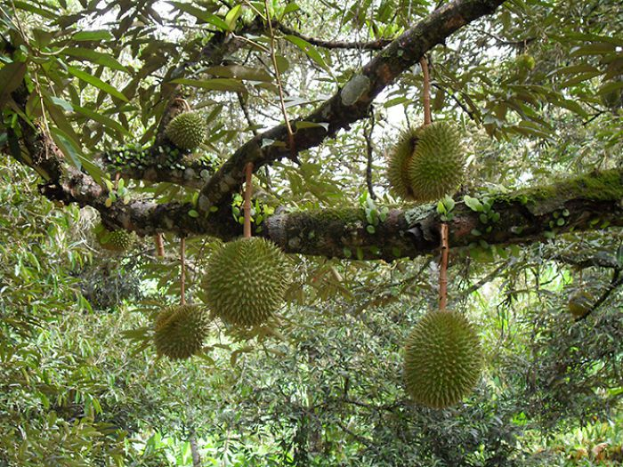
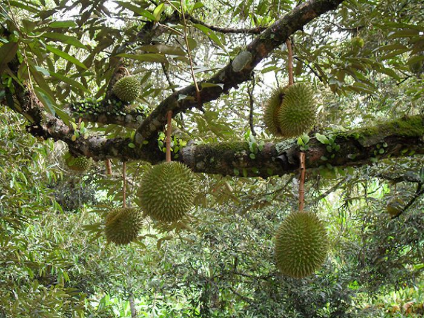

Кива́но, или рога́тая ды́ня, или огуре́ц африка́нский (лат. Cucumis metulifer) — травянистая
лиана
семейства Тыквенные (Cucurbitaceae), вид рода Огурец (Cucumis).
Длина растения достигает трёх метров. Происходит из Африки. Выращивается ради съедобных плодов, похожих на небольшую овальную дыню с шипами.
Наиболее широко культивируется в Калифорнии, Центральной Америке, Новой Зеландии, Израиле. Отрицательных температур растения не переносят.
Плод кивано жёлтого, оранжевого или красного цвета с несъедобной жёсткой кожистой кожурой, покрытой мягкими шипами. Имеет зелёную похожую на желе мякоть с бледно-зелёными семенами. Длина плода — до 15 см. Семена белые, многочисленные, длиной до 1 см.
По вкусу плод похож на огурец и банан. Может употребляться как в сладком, так и солёном виде. В солёных салатах используется с солью и перцем в лимонном соке. Также используется во фруктовых и молочных коктейлях и фруктовых напитках. Содержит мало калорий, поэтому часто используется в диетическом питании и в диетах для снижения веса.
Длина растения достигает трёх метров. Происходит из Африки. Выращивается ради съедобных плодов, похожих на небольшую овальную дыню с шипами.
Наиболее широко культивируется в Калифорнии, Центральной Америке, Новой Зеландии, Израиле. Отрицательных температур растения не переносят.
Плод кивано жёлтого, оранжевого или красного цвета с несъедобной жёсткой кожистой кожурой, покрытой мягкими шипами. Имеет зелёную похожую на желе мякоть с бледно-зелёными семенами. Длина плода — до 15 см. Семена белые, многочисленные, длиной до 1 см.
По вкусу плод похож на огурец и банан. Может употребляться как в сладком, так и солёном виде. В солёных салатах используется с солью и перцем в лимонном соке. Также используется во фруктовых и молочных коктейлях и фруктовых напитках. Содержит мало калорий, поэтому часто используется в диетическом питании и в диетах для снижения веса.
Реди́с — однолетние или двулетние растения из рода Редька семейства Капустные. Редис с точки
зрения
классификации — группа разновидностей вида Редька посевная (Raphanus sativus).
Редис — съедобное растение и выращивается как овощ во многих странах мира. Его название происходит от лат. radix — корень.
В пищу обычно употребляют корнеплоды, которые имеют диаметр от 2,5 см и покрыты тонкой кожей, окрашенной в красный, розовый или бело-розовый цвет. Корнеплоды редиса имеют острый вкус. Такой типичный вкус редиса обусловлен содержанием в растении горчичного масла, которое при давлении преобразуется в гликозид горчичного масла.
Редис — съедобное растение и выращивается как овощ во многих странах мира. Его название происходит от лат. radix — корень.
В пищу обычно употребляют корнеплоды, которые имеют диаметр от 2,5 см и покрыты тонкой кожей, окрашенной в красный, розовый или бело-розовый цвет. Корнеплоды редиса имеют острый вкус. Такой типичный вкус редиса обусловлен содержанием в растении горчичного масла, которое при давлении преобразуется в гликозид горчичного масла.
'Витело́т' (фр. 'Vitelotte', или 'Vitelotte Noire'), также называемый Негритянка (фр.
Négresse),
Китайский трюфель (фр. Truffe de Chine) или Синий французский трюфельный картофель
(нем. Blaue französische Trüffelkartoffel)) — сорт картофеля.
Клубни имеют тёмную-фиолетовую, почти чёрную кожицу и тёмно-фиолетовую мякоть благодаря высокому содержанию антоцианов; продолговатой формы, как правило, не более 10 сантиметров в длину. Средний вес одного клубня около 70 граммов. Картофель сохраняет свой цвет при кулинарной обработке. Клубни имеют толстую кожицу и следовательно обладают хорошей лёжкостью. Из-за большого содержания крахмала сильно разваривается, идеально подходит для приготовления картофельного пюре, которое будет иметь насыщенный сиреневый цвет.
Растения созревают поздно и по сравнению с современными сортами имеют довольно низкую урожайность, в связи с чем практически не выращивается промышленно, возделывается в частных хозяйствах и небольшими объёмами с использованием ручного труда. По этой причине цена на этот сорт выше, чем на другие, в несколько раз.
Клубни имеют тёмную-фиолетовую, почти чёрную кожицу и тёмно-фиолетовую мякоть благодаря высокому содержанию антоцианов; продолговатой формы, как правило, не более 10 сантиметров в длину. Средний вес одного клубня около 70 граммов. Картофель сохраняет свой цвет при кулинарной обработке. Клубни имеют толстую кожицу и следовательно обладают хорошей лёжкостью. Из-за большого содержания крахмала сильно разваривается, идеально подходит для приготовления картофельного пюре, которое будет иметь насыщенный сиреневый цвет.
Растения созревают поздно и по сравнению с современными сортами имеют довольно низкую урожайность, в связи с чем практически не выращивается промышленно, возделывается в частных хозяйствах и небольшими объёмами с использованием ручного труда. По этой причине цена на этот сорт выше, чем на другие, в несколько раз.